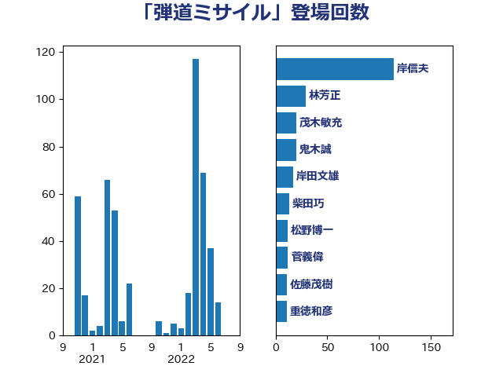

単語「弾道ミサイル」

| 岸信夫 | 自由民主党 | 114 回 |
| 林芳正 | 自由民主党 | 29 回 |
| 茂木敏充 | 自由民主党 | 20 回 |
| 鬼木誠 | 立憲民主党 | 20 回 |
| 岸田文雄 | 自由民主党 | 17 回 |
| 柴田巧 | 日本維新の会 | 13 回 |
| 松野博一 | 自由民主党 | 12 回 |
| 菅義偉 | 自由民主党 | 12 回 |
| 佐藤茂樹 | 公明党 | 11 回 |
| 重徳和彦 | 立憲民主党 | 11 回 |
| 篠原豪 | 立憲民主党 | 10 回 |
| 井上哲士 | 日本共産党 | 9 回 |
| 穀田恵二 | 日本共産党 | 7 回 |
| 佐藤正久 | 自由民主党 | 6 回 |
| 浅田均 | 日本維新の会 | 6 回 |
| 笠井亮 | 日本共産党 | 6 回 |
| 羽田次郎 | 立憲民主党 | 6 回 |
| 加藤勝信 | 自由民主党 | 5 回 |
| 小西洋之 | 立憲民主党 | 5 回 |
| 小野寺五典 | 自由民主党 | 5 回 |
| 田島麻衣子 | 立憲民主党 | 5 回 |
| 美延映夫 | 日本維新の会 | 5 回 |
| 岩渕友 | 日本共産党 | 4 回 |
| 斎藤アレックス | 国民民主党 | 4 回 |
| 梶山弘志 | 自由民主党 | 4 回 |
| 赤嶺政賢 | 日本共産党 | 4 回 |
| 伊波洋一 | 無所属 | 3 回 |
| 北神圭朗 | 無所属 | 3 回 |
| 山田賢司 | 自由民主党 | 3 回 |
| 掘井健智 | 日本維新の会 | 3 回 |
| 比嘉奈津美 | 自由民主党 | 3 回 |
| 浜地雅一 | 公明党 | 3 回 |
| 片山さつき | 自由民主党 | 3 回 |
| 石井啓一 | 公明党 | 3 回 |
| 緑川貴士 | 立憲民主党 | 3 回 |
| 中西祐介 | 自由民主党 | 2 回 |
| 吉田宣弘 | 公明党 | 2 回 |
| 吉田統彦 | 立憲民主党 | 2 回 |
| 太栄志 | 立憲民主党 | 2 回 |
| 山本太郎 | れいわ新選組 | 2 回 |
| 柿沢未途 | 無所属 | 2 回 |
| 磯崎仁彦 | 自由民主党 | 2 回 |
| 赤羽一嘉 | 公明党 | 2 回 |
| 下条みつ | 立憲民主党 | 1 回 |
| 中谷元 | 自由民主党 | 1 回 |
| 井上英孝 | 日本維新の会 | 1 回 |
| 北側一雄 | 公明党 | 1 回 |
| 城内実 | 自由民主党 | 1 回 |
| 奥野総一郎 | 立憲民主党 | 1 回 |
| 宮本周司 | 自由民主党 | 1 回 |
| 小野田紀美 | 自由民主党 | 1 回 |
| 岩本剛人 | 自由民主党 | 1 回 |
| 岩谷良平 | 日本維新の会 | 1 回 |
| 松山政司 | 自由民主党 | 1 回 |
| 梅村みずほ | 日本維新の会 | 1 回 |
| 浦野靖人 | 日本維新の会 | 1 回 |
| 渡辺周 | 立憲民主党 | 1 回 |
| 甘利明 | 自由民主党 | 1 回 |
| 田中健 | 国民民主党 | 1 回 |
| 石井苗子 | 日本維新の会 | 1 回 |
| 福山哲郎 | 立憲民主党 | 1 回 |
| 竹内真二 | 公明党 | 1 回 |
| 谷川とむ | 自由民主党 | 1 回 |
| 足立康史 | 日本維新の会 | 1 回 |
| 鈴木敦 | 国民民主党 | 1 回 |
| 青木一彦 | 自由民主党 | 1 回 |
| 青柳仁士 | 日本維新の会 | 1 回 |
| 音喜多駿 | 日本維新の会 | 1 回 |
| 高橋はるみ | 自由民主党 | 1 回 |
| 高橋光男 | 公明党 | 1 回 |